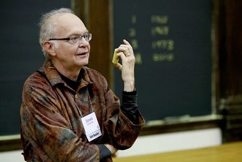

Magneto
Magneto, um dos personagens mais complexos e fascinantes do universo X-Men, é um anti-herói cuja jornada reflete as tensões entre o poder, a vingança e a luta pela sobrevivência. Nascido como Max Eisenhardt (ou Erik Lehnsherr, dependendo da versão), Magneto é um judeu que sobreviveu ao Holocausto, e essa experiência traumática moldou profundamente sua visão de mundo.
Sua habilidade de controlar o magnetismo o torna um dos mutantes mais poderosos, capaz de manipular metais, gerar campos de força, e até afetar o funcionamento de aparelhos eletrônicos. No entanto, é sua luta interna e seus dilemas morais que realmente definem o personagem. Magneto acredita firmemente que os mutantes, como uma espécie mais avançada, estão destinados a dominar os humanos, que ele vê como inferiores e incapazes de entender ou aceitar a superioridade dos mutantes. Esse pensamento o leva a um conflito constante com os X-Men, especialmente com Charles Xavier, seu amigo de longa data e o líder da equipe, que acredita na coexistência pacífica entre humanos e mutantes.
A complexidade de Magneto reside em seu passado. Sua vivência como sobrevivente do Holocausto, onde perdeu sua família, o tornou profundamente cínico em relação à humanidade. Ele vê a discriminação contra os mutantes como uma repetição do sofrimento que ele sofreu, o que o leva a adotar métodos muitas vezes controversos para garantir a sobrevivência dos mutantes. Essa postura, no entanto, não o torna um vilão simples ou unidimensional. Magneto muitas vezes age de forma racional, e suas ações, embora extremas, têm um fundamento moral que é difícil de ignorar. Ele luta por um futuro em que os mutantes sejam livres de perseguições, mas seus métodos nem sempre são justificados pela ética convencional.
Apesar de sua rivalidade com os X-Men, Magneto não é uma figura completamente vilanesca. Ele tem momentos de redenção, e seu relacionamento com os próprios X-Men, especialmente com Xavier, é multifacetado. Ao longo das histórias, ele muitas vezes se alia aos heróis para enfrentar ameaças maiores, mostrando que suas intenções, embora extremas, não são totalmente malignas.
No fundo, Magneto é um reflexo de como a luta pelo poder, pela sobrevivência e pela identidade pode corromper uma pessoa, mas também de como o sofrimento pode gerar um desejo profundo de mudança. Ele é um personagem que desafia as fronteiras entre o bem e o mal, e sua jornada é uma das mais ricas do universo dos quadrinhos
John von Neumann

John von Neumann foi um matemático, físico e cientista da computação húngaro-americano,
reconhecido por suas contribuições fundamentais em diversas áreas do conhecimento, incluindo
matemática pura, física teórica, economia e ciência da computação. É amplamente conhecido
por ter idealizado a arquitetura de von Neumann, modelo de organização de computadores
baseado no armazenamento de dados e instruções em uma mesma memória — conceito que permanece
como base dos sistemas computacionais modernos. Durante a Segunda Guerra Mundial, participou
do Projeto Manhattan e colaborou intensamente no desenvolvimento de computadores eletrônicos
de uso geral. Sua abordagem pragmática e interdisciplinar consolidou a computação como uma
ciência aplicada, conectando teoria e engenharia de forma inovadora e duradoura.
Donald E. Knuth

Donald E. Knuth é um cientista da computação e matemático norte-americano, amplamente
reconhecido por suas contribuições fundamentais à análise de algoritmos e à sistematização
da programação como disciplina rigorosa. É autor da série The Art of Computer Programming,
obra de referência que consolidou os fundamentos teóricos e práticos da ciência da
computação. Knuth também desenvolveu o sistema de tipografia digital TeX, ainda hoje
amplamente utilizado na produção de textos técnicos e acadêmicos, especialmente nas áreas de
exatas. Seu trabalho foi crucial para estabelecer padrões de precisão, clareza e elegância
na programação, elevando-a ao status de arte e ciência.